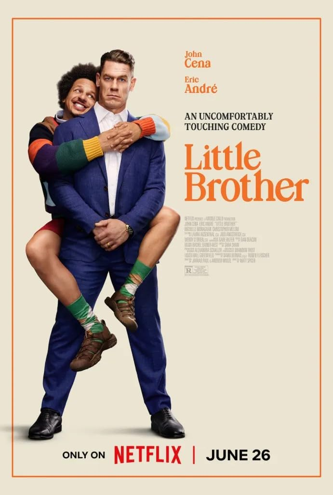
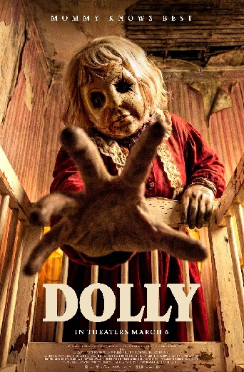
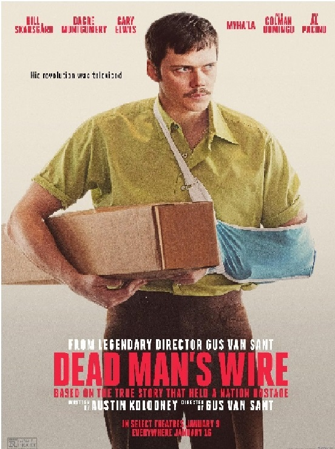
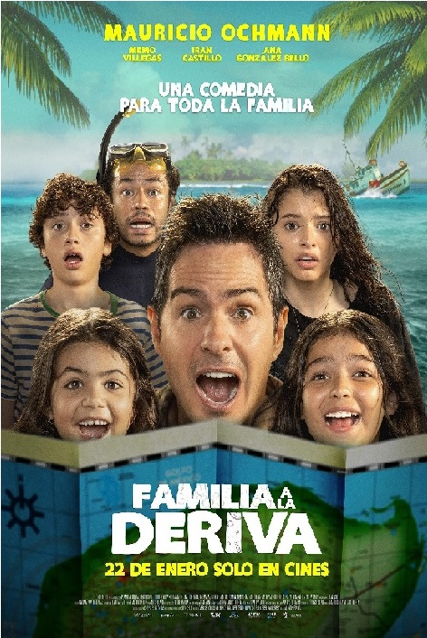
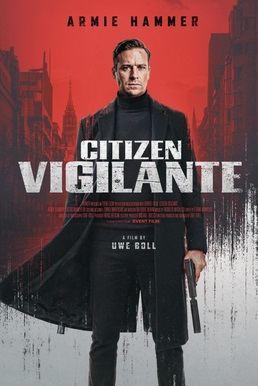
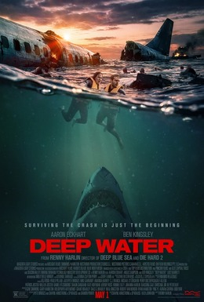

Supergirl narra la historia de Kara Zor-El, una heroína marcada por el trauma de ver morir su planeta. Al cruzarse con una joven alienígena que busca venganza contra el asesino de su familia, Kara se une a ella en un rudo viaje intergaláctico de justicia y redención por el cosmos.
Los mejores productos justo para ti!
Las películas que quieres ver!
Enola Holmes 3 sigue a la joven detective lejos de Londres, enfrentando un caso traicionero mientras su vida personal se complica. Justo cuando acepta casarse con Tewkesbury, recibe una impactante noticia: ¡su hermano Sherlock ha sido secuestrado! Ahora sus sueños profesionales y personales chocan de frente.

Little Brother es una comedia que sigue la perfecta vida de un famoso agente de bienes raíces. Su estabilidad se altera por completo cuando su excéntrico y problemático "hermano menor" del instituto reaparece tras sufrir un accidente automovilístico. Al mudarse con él, desatará un caos que pondrá a prueba su paciencia y su matrimonio.

Dolly es una película de terror que sigue la lucha por sobrevivir de Macy tras ser secuestrada por una perturbadora figura monstruosa. Este desquiciado captor pretende retenerla en el bosque y criarla como si fuera su propia hija, tratándola como si fuera una nueva muñeca de su colección.

Dead Man's Wire narra el impactante caso real de Tony Kiritsis. En 1977, tras sentirse estafado por una financiera, toma como rehén al presidente de la empresa usando una escopeta cableada a su propio cuello, desatando un tenso secuestro mediático que paraliza a la sociedad.
El Mal es un thriller psicológico español que sigue una inquietante historia de suspense. A medida que una amenaza invisible crece, la trama obliga a los personajes y al espectador a cuestionar sus certezas, el límite de su capacidad de amar y la profunda oscuridad que todos llevamos dentro.

Familia a la Deriva narra la historia de Gonzalo, un carismático vendedor de autos que, tras sufrir un accidente, intenta recuperar el amor de sus cuatro hijos de dos matrimonios distintos. Junto a su mecánico, organiza un viaje en yate por el Caribe que pronto se sale de control en una divertida odisea familiar.
La película I Love Boosters (2026), dirigida por Boots Riley, sigue a Corvette (Keke Palmer) y su banda de farderas (boosters). Ellas roban ropa de alta costura para revenderla barata. Al enfrentar a una cruel magnate de la moda (Demi Moore), desatan un caótico movimiento obrero mundial asistidas por tecnología de teletransportación.
Los mejores productos justo para ti!
Las películas que quieres ver!
Minions & Monsters narra cómo los Minions conquistan Hollywood en 1927. Al intentar filmar una película, desatan por error monstruos reales que amenazan al planeta. Tras perderlo todo, la carismática tribu debe unirse para detener el caos y salvar al mundo.

Citizen Vigilante sigue a Sanders, un hombre que decide tomar la justicia por mano propia y cazar criminales. Su violenta cruzada lo convierte en una celebridad viral y héroe para el público, pero el jefe de Interpol, Henry, lo persigue al considerarlo una gran amenaza social.

Young Washington narra la juventud de George Washington. Sigue a un colono ambicioso atrapado en la selva, traiciones militares y la guerra con Francia. Sus peligrosas decisiones en el campo de batalla forjarán al legendario líder que cambiará la historia de América.

Deep Water presenta un viaje en avión que termina en catástrofe. Pasajeros internacionales viajan rumbo a Shanghái cuando sufren un aparatoso accidente. Tras un aterrizaje forzoso en el océano, deben unirse para sobrevivir a un voraz frenesí de tiburones hambrientos.

Gladiator II sigue a Lucius, quien es capturado como prisionero de guerra. Impulsado por una furia incontenible y el deseo de venganza contra el general que le quitó todo, ingresa al coliseo como gladiador. Lucius luchará con el espíritu de su padre, Maximus, para liberar a Roma.